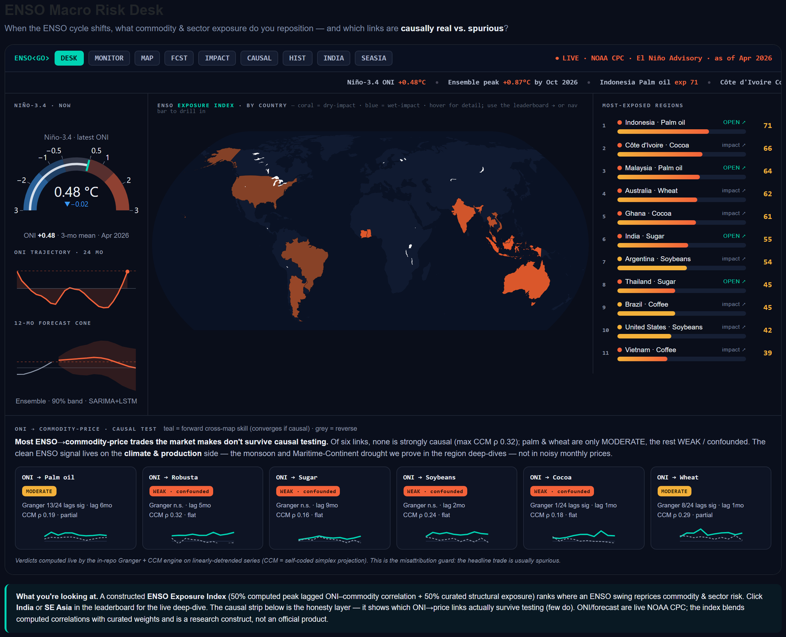
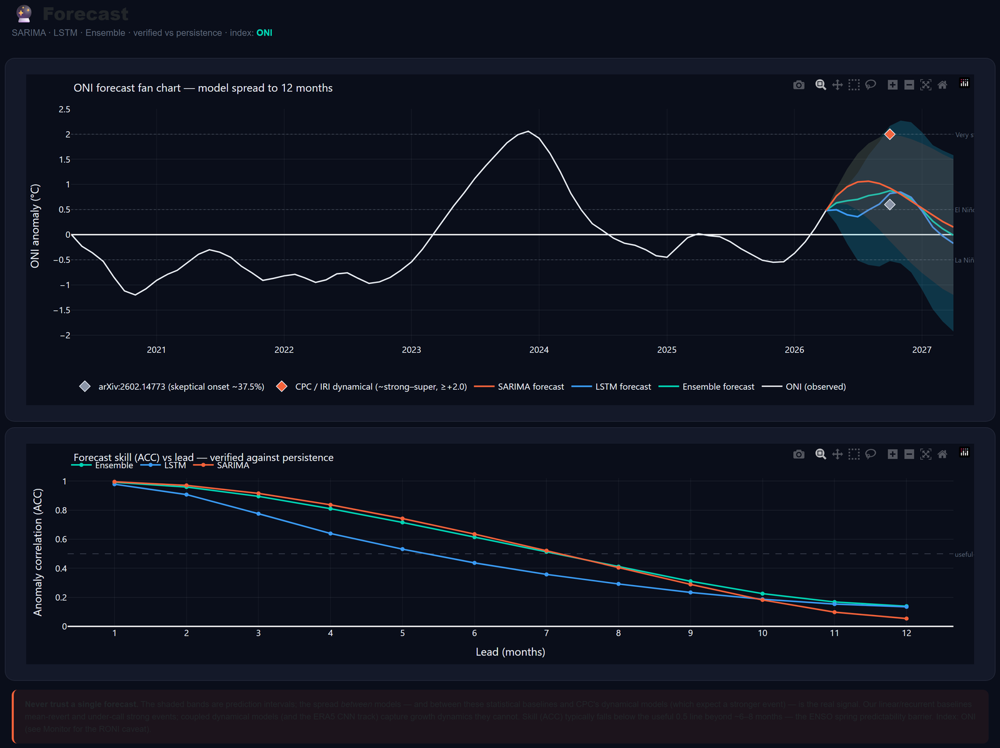
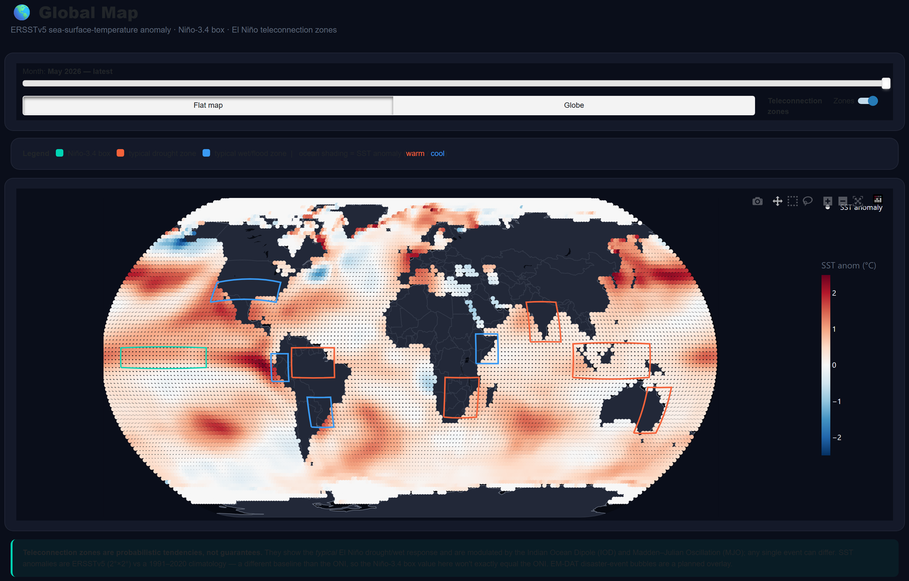
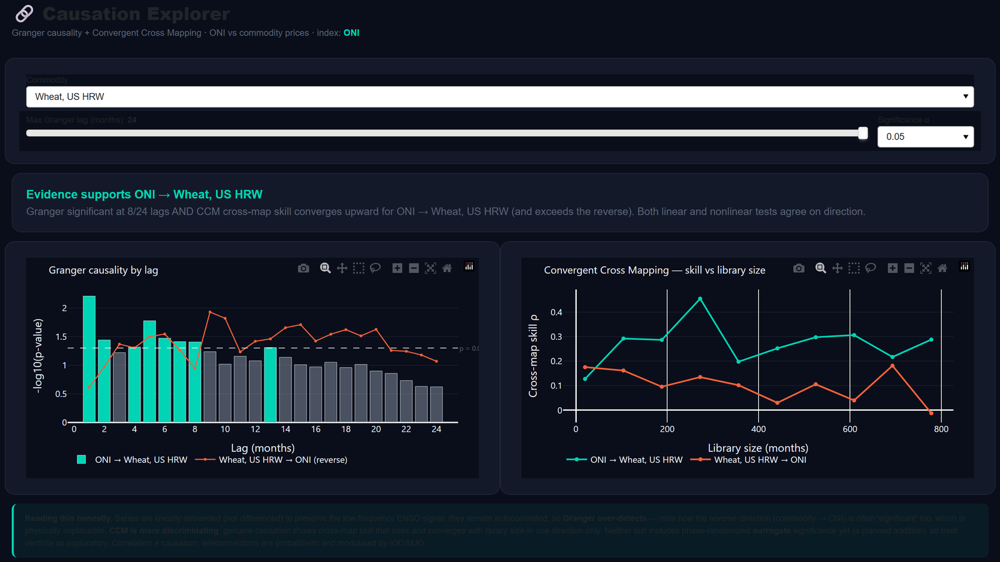
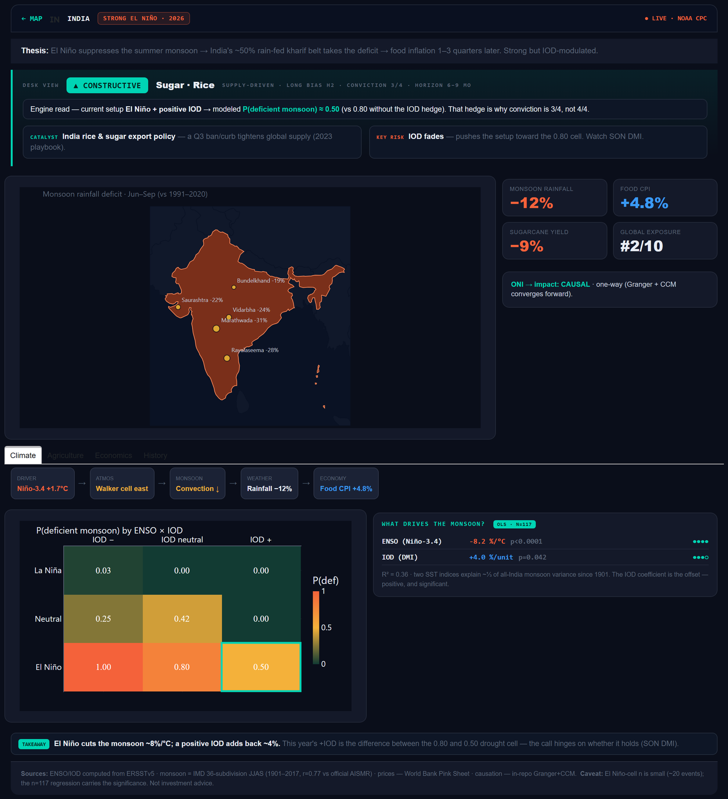

When the ENSO cycle shifts: which commodity & sector exposures to reposition — and which ENSO→price links are causally real vs. spurious. ONI/RONI monitoring · SARIMA+LSTM forecasts · Granger + CCM causal testing.




